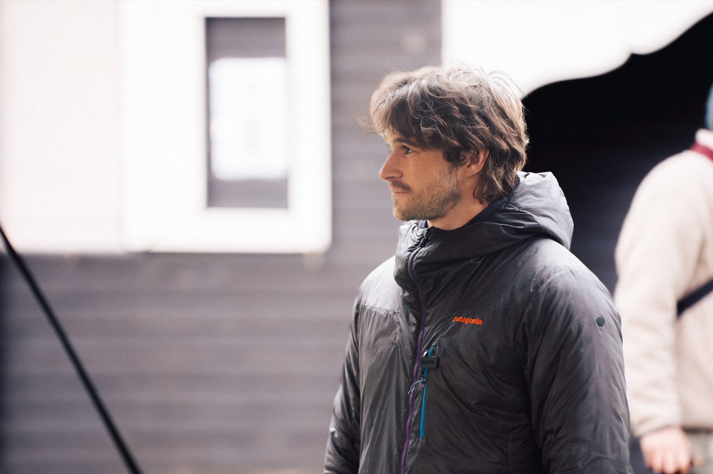
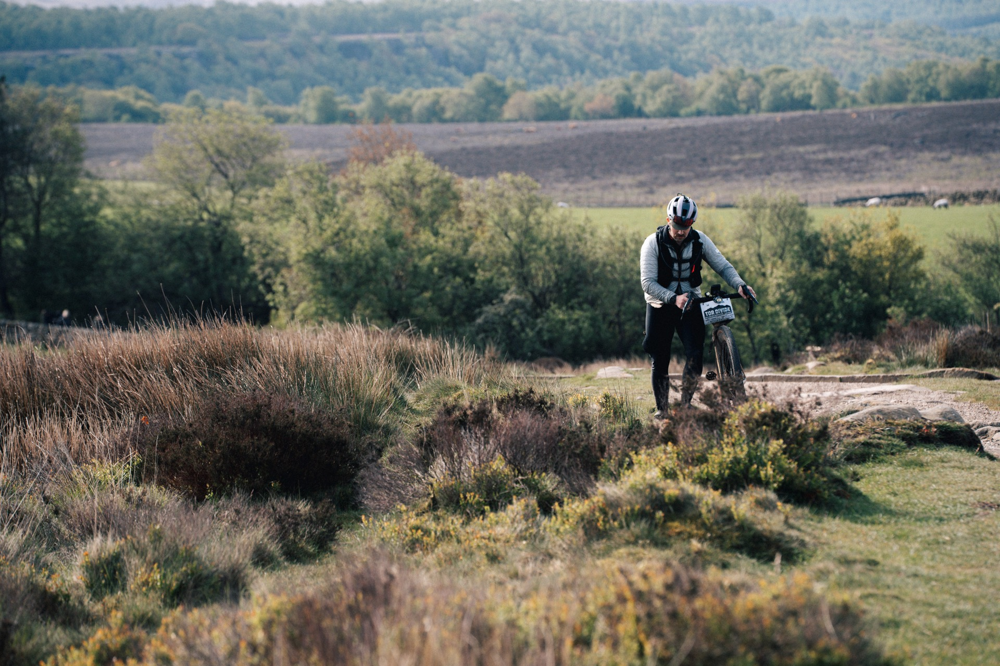
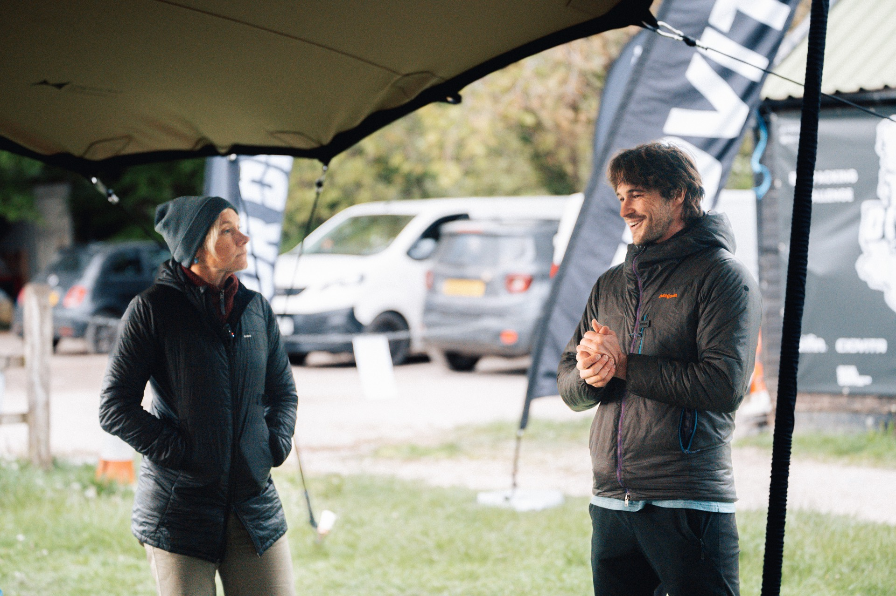

Expedition Psychology in the Field
Overview
The Tor Divide is a self-supported bikepacking event crossing the Peak District, attracting riders ranging from first-time bikepackers to experienced ultra-endurance athletes.
Expedition Psychology was invited to deliver a pre-event workshop exploring the psychological skills required to navigate challenge, adversity, and uncertainty during endurance events.
Alongside the workshop, rider interviews were conducted throughout the event to better understand the real-world psychological demands participants faced and the strategies they used to overcome them.
The project provided an opportunity to translate psychological theory into practical tools while gathering valuable insights into human performance in demanding outdoor environments.
"The talk really got me thinking about why I was here and what would keep me moving when things got tough."
Event
The Tor Divide
Sector
Intervention
Pre-event psychology workshop and in-field rider interviews across the event weekend
Focus Areas
Watch the Talk
Watch a clip from the pre-event workshop — covering the psychological demands of self-supported endurance challenges and the practical tools riders can use to manage motivation, adversity, and uncertainty in the field.
Delivered by Dr Fin Haley, Clinical Psychologist at Expedition Psychology, at the Tor Divide start.

Watch on YouTube
The Tor Divide × Expedition Psychology
2. The Challenge
Unlike traditional races, the Tor Divide offers no prizes, rankings, or podiums. Participants are required to navigate between 150km and 250km of Peak District terrain completely self-supported, making decisions around pacing, nutrition, sleep, navigation, and problem-solving independently.

A Tor Divide rider navigating the open moorland of the Peak District.
This creates a unique psychological environment where riders must manage:
While riders often spend significant time preparing physically, many have little formal preparation for the psychological demands of long-distance endurance challenges. The aim was therefore twofold:
"I found the talk inspirational — it definitely gave me a lot to think about during the ride."
3. The Intervention

Fin Haley delivering the pre-event psychology workshop at the Tor Divide start.
Before riders set out, Expedition Psychology delivered a pre-event workshop introducing practical psychological tools for self-awareness, motivation, and managing adversity. Throughout the weekend, informal rider interviews captured how those strategies translated into real performance on the terrain.
Riders were introduced to concepts of self-awareness and emotional regulation, exploring how they typically respond when things become difficult.
Practical psychological tools were introduced to help riders navigate challenging moments throughout the event. The focus throughout was on practical application rather than theory alone.
Throughout the weekend, Expedition Psychology conducted informal interviews with riders before, during, and after the event — a unique opportunity to observe psychological skills operating in real-world conditions rather than controlled environments.
"Unforgettable — it's given me so many tools to better prepare for events like this in the future."
4. Measurable & Observable Impact
Several consistent themes emerged across rider interviews, revealing how psychological preparation translated into real performance under pressure.
Participants who maintained a clear connection to their personal reasons for undertaking the challenge appeared better able to navigate periods of discomfort and uncertainty.
Many experienced riders demonstrated strong awareness of how fatigue, hunger, and sleep deprivation influenced their thinking — recognising these as temporary rather than reacting immediately to negative thoughts.
One of the most common psychological strategies reported was reducing overwhelming challenges into smaller, manageable objectives — the next checkpoint, climb, village, or hour rather than the remaining distance.
Success in endurance environments is influenced by far more than physical fitness alone. Emotion regulation, sustained motivation, adaptability to setbacks, and decision-making under pressure all emerged as critical performance factors.
"I wish there were more talks like this at other events. It really gives you something useful to think about."
Work With Expedition Psychology
Endurance events, expeditions, adventure organisations, and high-performance teams all operate in environments where uncertainty, pressure, and adversity are unavoidable. Expedition Psychology helps individuals and organisations develop the psychological skills required to perform effectively when conditions become challenging.